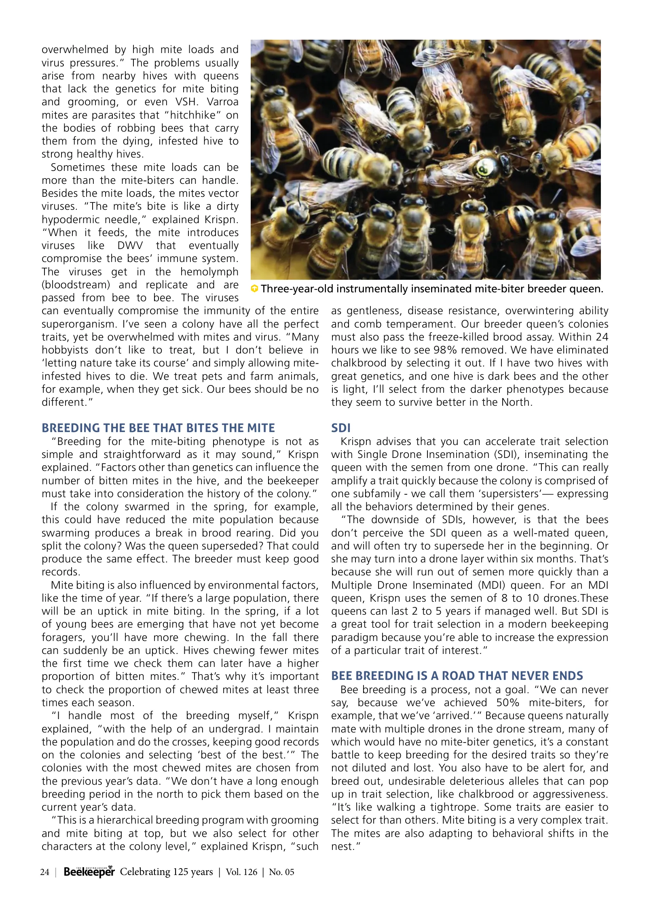

overwhelmed by high mite loads and
virus pressures.” The problems usually
arise from nearby hives with queens
that lack the genetics for mite biting
and grooming, or even VSH. Varroa
mites are parasites that “hitchhike” on
the bodies of robbing bees that carry
them from the dying, infested hive to
strong healthy hives.
Sometimes these mite loads can be
more than the mite-biters can handle.
Besides the mite loads, the mites vector
viruses. “The mite’s bite is like a dirty
hypodermic needle,” explained Krispn.
“When it feeds, the mite introduces
viruses
like
DWV
that
eventually
compromise the bees’ immune system.
The viruses get in the hemolymph
(bloodstream) and replicate and are
passed from bee to bee. The viruses
can eventually compromise the immunity of the entire
superorganism. I’ve seen a colony have all the perfect
traits, yet be overwhelmed with mites and virus. “Many
hobbyists don’t like to treat, but I don’t believe in
‘letting nature take its course’ and simply allowing mite-
infested hives to die. We treat pets and farm animals,
for example, when they get sick. Our bees should be no
different.”
BREEDING THE BEE THAT BITES THE MITE
“Breeding for the mite-biting phenotype is not as
simple and straightforward as it may sound,” Krispn
explained. “Factors other than genetics can influence the
number of bitten mites in the hive, and the beekeeper
must take into consideration the history of the colony.”
If the colony swarmed in the spring, for example,
this could have reduced the mite population because
swarming produces a break in brood rearing. Did you
split the colony? Was the queen superseded? That could
produce the same effect. The breeder must keep good
records.
Mite biting is also influenced by environmental factors,
like the time of year. “If there’s a large population, there
will be an uptick in mite biting. In the spring, if a lot
of young bees are emerging that have not yet become
foragers, you’ll have more chewing. In the fall there
can suddenly be an uptick. Hives chewing fewer mites
the first time we check them can later have a higher
proportion of bitten mites.” That’s why it’s important
to check the proportion of chewed mites at least three
times each season.
“I handle most of the breeding myself,” Krispn
explained, “with the help of an undergrad. I maintain
the population and do the crosses, keeping good records
on the colonies and selecting ‘best of the best.’” The
colonies with the most chewed mites are chosen from
the previous year’s data. “We don’t have a long enough
breeding period in the north to pick them based on the
current year’s data.
“This is a hierarchical breeding program with grooming
and mite biting at top, but we also select for other
characters at the colony level,” explained Krispn, “such
Three-year-old instrumentally inseminated mite-biter breeder queen.
as gentleness, disease resistance, overwintering ability
and comb temperament. Our breeder queen’s colonies
must also pass the freeze-killed brood assay. Within 24
hours we like to see 98% removed. We have eliminated
chalkbrood by selecting it out. If I have two hives with
great genetics, and one hive is dark bees and the other
is light, I’ll select from the darker phenotypes because
they seem to survive better in the North.
SDI
Krispn advises that you can accelerate trait selection
with Single Drone Insemination (SDI), inseminating the
queen with the semen from one drone. “This can really
amplify a trait quickly because the colony is comprised of
one subfamily - we call them ‘supersisters’— expressing
all the behaviors determined by their genes.
“The downside of SDIs, however, is that the bees
don’t perceive the SDI queen as a well-mated queen,
and will often try to supersede her in the beginning. Or
she may turn into a drone layer within six months. That’s
because she will run out of semen more quickly than a
Multiple Drone Inseminated (MDI) queen. For an MDI
queen, Krispn uses the semen of 8 to 10 drones.These
queens can last 2 to 5 years if managed well. But SDI is
a great tool for trait selection in a modern beekeeping
paradigm because you’re able to increase the expression
of a particular trait of interest.”
BEE BREEDING IS A ROAD THAT NEVER ENDS
Bee breeding is a process, not a goal. “We can never
say, because we’ve achieved 50% mite-biters, for
example, that we’ve ‘arrived.’” Because queens naturally
mate with multiple drones in the drone stream, many of
which would have no mite-biter genetics, it’s a constant
battle to keep breeding for the desired traits so they’re
not diluted and lost. You also have to be alert for, and
breed out, undesirable deleterious alleles that can pop
up in trait selection, like chalkbrood or aggressiveness.
“It’s like walking a tightrope. Some traits are easier to
select for than others. Mite biting is a very complex trait.
The mites are also adapting to behavioral shifts in the
nest.”
24 |
Celebrating 125 years | Vol. 126 | No. 05